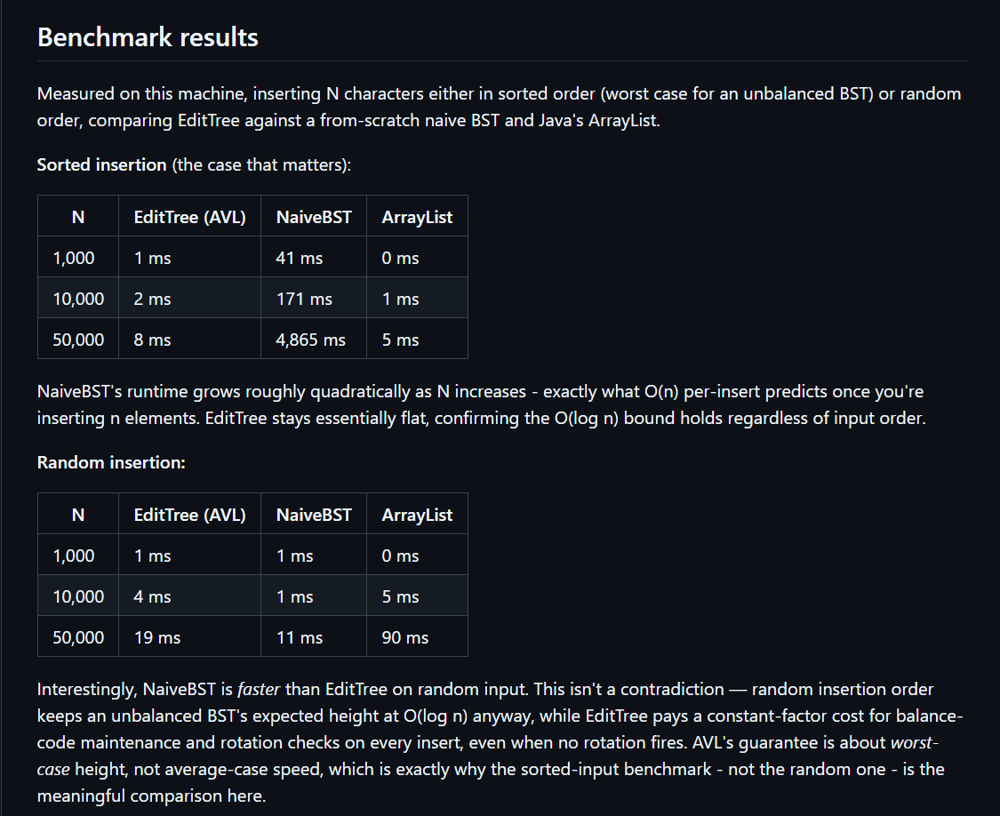

Software Engineering Projects
-
Editor Trees

-
An AVL-tree-based text editor built in Java. Handles text
operations by keeping the document balanced as a tree instead of a
flat buffer, which gets you a 600x speedup on sorted input over a
naive approach. Backed by a 13-test JUnit 5 suite.
- Tech: Java, JUnit 5
-
Link:
Editor Trees GitHub
-
Nandan GSE Planning & Analytics Dashboard
-
Internal dashboard built during my AI & Automation internship,
used daily by project managers to track planning data and
analytics across the org.
-
Tech: React, PostgreSQL, FastAPI, deployed on
Vercel
- Link: Internal tool, not publicly linkable
-
Intern Portal
-
Full-stack internal tool handling onboarding and management for a
cohort of 100 interns.
-
Tech: React, PostgreSQL, Resend, deployed on
Vercel
- Link: Internal tool, not publicly linkable
-
Automated Lead Pipeline
-
n8n-automated pipeline that routes leads directly into ERPNext,
removing a manual data-entry step from the sales process.
- Tech: n8n, Frappe, ERPNext
- Link: Internal tool, not publicly linkable